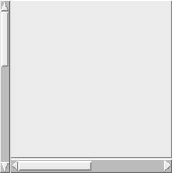

A hypertext widget surrounded by two scrollbars. The appropriate commands to enable scrolling are already set. HypertextLS and HypertextRS differ at the side where the vertical scrollbar is displayed.
 Figure: The template HypertextLS